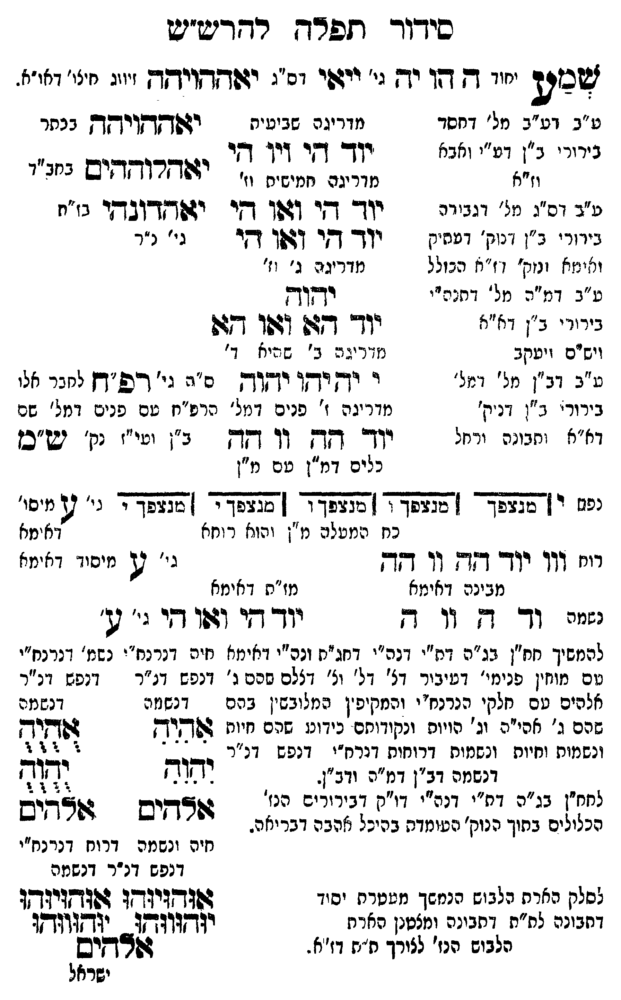

Neue Klartextfassung
שמע [יסוד — ה הויה יה גי' ייאי דס"ג — יאההויהה — זיווג חיצו' דחו"ב.] === טבלה === [מדריגה שביעית] יוד הי ויו הי יאההויהה [בכתר] [מדריגה חמישית וו'] יוד הי ואו הי יוד הי ואו הי יאהלוההים [בחב"ד] יאהדונהי [נו"ה; גי' נ"ר] [מדריגה ג' וד'] יהוה יוד הא ואו הא [מדריגה ב' שהיא ד'] י יה יהו יהוה [ס"ג גי' רפ"ח לברר אלו מדריגה א' פנים דמל' הרפ"ח עם פנים דמל' שם ב"ן וטו"ב י"ק ש"מ [?]] יוד הה וו הה [כלים דמ"ן עם מ"ן] [נפש] י [מנצפך] ה [מנצפך] ו [מנצפך] ה [מנצפך] י [מנצפך] [כח המעלה מ"ן והיא רחל] [רוח] וו יוד הה וו הה [גי' ע' מיסוד דאימא] [נשמה — מבינה דאימא] יד ה ה וו ה [מו"ח דאימא] יוד הי ואו הי [גי' ע'] === סוף טבלה === [ע"ב דע"ב מל' דחסד בירורי ב"ן דע"י ואבא וז"א. ע"ב דס"ג מל' דגבורה בירורי ב"ן דנוק' דעתיק ודאימא ונוק' דז"א הכולל. ע"ב דמ"ה מל' דת"ת בירורי ב"ן דז"א ויס"ס ויעקב. ע"ב דב"ן מל' דזכ"א בירורי ב"ן דנוק' דא"א ותבונה ורחל. [?]] [להמשיך חו"ן נרנח"י דזכ"א דחג"ת וכלי' דאימא עם דנכח"י שמו' דנרנח"י עם מוחין פנימ' דעיבור דלי' דלי' וו' דצלם שהם ג' נפש דנ"ר דנפש דנ"ר נתנים עם חלקי הנרנח"י והמקיפין מלובשין בהם דנשמה שהם ג' אהי"ה וג' הויות ונקודותם כידוע שהם חיות ונשמות וחיות ונשמות דרוחות דנרנח"י דנפש דנ"ר דנשמה דב"ן דמ"ה וב"ן. [?]] === טבלה === [דנשמה] אִהִיִהִ יִהִוִהִ אלהים [חיה ונפש דרוח דנרנח"י דנפש דנ"ר דנשמה] אֻהֻיֻהֻ יֻהֻוֻהֻ אלהים [אוּהוּיוּהוּ אוּהוּיוּהוּ] [יוּהוּווּהוּ יוּהוּווּהוּ] אלהים === סוף טבלה === [לחו"ן נרנח"י דמ"ה דו"ק דבירורים הנז' הכלולים בתוך הנוק' העומדת בהיכל אהבה דבריאה. לסלק הארה הלבוש הנמשך מעטרת יסוד דתבונה למ"ת דבינה ומלבוש הארת הלבוש הנז' לצורך מ"ס דז"א. [?]]
Original gegen neue OCR · Niqqud für Vergleich ausgeblendet
Original
שמע [יסוד — ה הויהK141-001 יה ∅K141-002 גי' ייאי דס"ג — יאההויהה — זיווג חיצו' דחו"ב.] === טבלה === [מדריגה שביעית] יוד הי ויו הי יאההויהה [בכתר] [מדריגה חמישית וו'] יוד הי ואו הי יוד הי ואו הי יאהלוההים [בחב"ד] יאהדונהי [נו"ה; גי' נ"ר] [מדריגה ג' וד'] יהוה יוד הא ואו הא [מדריגה ב' שהיא ד'] י יה יהו יהוה [ס"ג גי' רפ"ח לבררK141-003 אלו ∅K141-004 מדריגה א'K141-005 פנים דמל' הרפ"ח עם פניםK141-006 דמל' שם ב"ן וטו"ב י"ק ש"מ ]K141-007 יוד הה וו הה [כלים דמ"ן עם מ"ן] [נפש] י [מנצפך] ה [מנצפך] ו [מנצפך] ה [מנצפך] י [מנצפך] [כח המעלה מ"ן והיא רחל] [רוח] וו יוד הה וו הה [גי' ע' מיסוד דאימא] [נשמה — מבינה דאימא] יד ה ה וו ה [מו"ח דאימא] יוד הי ואו הי [גי' ע'] === סוף טבלה === [ע"ב דע"ב מל' דחסד בירורי ב"ן דע"י ואבא וז"א. ע"ב דס"ג מל' דגבורה בירורי ב"ן דנוק' דעתיק ודאימא ונוק' דז"א הכולל. ע"ב דמ"ה מל' דת"ת בירורי ב"ן דז"א ויס"ס ויעקב. ע"ב דב"ן מל' דזכ"א בירורי ב"ן דנוק' דא"א ותבונה ורחל. ] [להמשיך חו"ן נרנח"י דזכ"א דחג"ת וכלי'K141-008 דאימא עם דנכח"י שמו'K141-009 דנרנח"י עם מוחין פנימ' דעיבור דלי' דלי' וו'K141-010 דצלם שהםK141-011 ג' נפש דנ"רK141-012 דנפש דנ"ר נתנים עםK141-013 חלקי הנרנח"י והמקיפין מלובשין בהםK141-014 דנשמה שהם ג' אהי"ה וג' הויותK141-015 ונקודותם כידועK141-016 שהם חיותK141-017 ונשמות וחיות ונשמות דרוחות ∅K141-018 דנרנח"י דנפש דנ"ר דנשמה דב"ן דמ"ה וב"ן. ] === טבלה === [דנשמה] אהיה יהוה אלהים [חיה ונפש דרוח דנרנח"י דנפש דנ"ר דנשמה] אהיה יהוה אלהים [אוהויוהו אוהויוהו] [יוהוווהו יוהוווהו] אלהים === סוף טבלה === [לחו"ן נרנח"י דמ"ה דו"ק דבירורים הנז' הכלולים בתוך הנוק' העומדת בהיכל אהבה דבריאה.K141-019 לסלק הארהK141-020 הלבוש הנמשך מעטרת יסוד דתבונה למ"ת דבינה ומלבוש הארת הלבושK141-021 הנז' לצורך מ"ס דז"א. ]K141-022
OCR · fehlbar
סיךדוך תפדח רדדיע"יש שמי: יחוד דק ך ץ גי' ייבשי וח"ג ידזדךיקקךן זיווג חיו' דאו"א. ט"ב דט"ב מל' דחסד מדריגה שביטית רגששקיקךן בנתר "' ז' "' גז קג[. זי יז:ררודדים ני' וז"א מדריגה חמישיח וז' ז' ז:) ז ז ל מ"ב דס"ג מל' דגבו דה יוד' דזי דדך דקי יזפקךןז-"גךקר בז"ח גידור י ג"ן נוק' דטגז-ק יזך- דקר זזקך (זי גי' נ"ר ואינזא זנוק' ז ז"ן הגזלל מדריגה ג' (ז' ע"ב דמ"ה מל' דתגה"י רדקרךן ייי. נ'. "' יוד דגף ון דגו ויש"ם ז יטקב נ].'ייגK141-001 יה ב' ש(גיא ד' ע"ב ב"ן מל' דנזל' י יךן יי ודזץץ ם"ףK141-002 גי' דפפ"ךן לחברK141-003 אלו בירור' ג"ן דנק'K141-004 מדריגה ז'K141-005 פנים דמל' הרפ"ח שם פנים.K141-006 דמל' שם דא"י וחבונה ירמל יד- חד. זך -דן "ן (שי". נק' יש"בן כלים דמ"ן טם מ"ן יזף י 7166 73666 4666 36564 - 771661 נ' 1 ני' כח המטלו: נ "ן והוא ר וחא דאימא דו. דדך יייך- (-ז-ן זך דןךץ ני' ג[ מיסוץ' דא ימא מבינה דאימא מז"ת דאימא נגינ ו- ג. וו דK141-007 יוד -י וגו די נ' ש להמשיך חח"ן בג"ה דח"י דנה"י דחג"ח ונה"יK141-008 דאימא נזיהK141-009 דנרנח"י נשמ' דנרנח"י דם מווזין פנימי' דנ(יביר דצ' דל' ונ'K141-010 דצלם שכםK141-011 ג' ∅K141-012 דנפש דנ"ר ד(פש ונ"ר אלהים טםK141-013 חלקי הנרנח"י והמקיפ'ן עמלובש"ן ברח - דנשוזתK141-014 דנשמה שהם ג' אהי"ה וג' הויוK141-015 ונקודותם כידונ:K141-016 שהם חיוח דקיק ג(ץ[יקקK141-017 ונשמות וחיות ונשמות דרוחות דנרח"י דנפש דנ"ר 7 33 דנשמה דב"ן דמ"ה ודב"- ודוד יחוד ח ז 22 זז זז ל אל 2 לחח"ן בג"ה דת"י דנה"י דו"ק דבירוריב הנז ל ( הכלולים בתוך הנוק' טעומדת בהיכל אהבה דבריאה. (ודדיש גוד-יב חיה ונשמה דרוחK141-018 דנרנח"י דנפש דנ"ר דנשמה ∅K141-019 לסלק הארתK141-020 הלבוש הנמשך מטטרח יסיד א[דדנצלדו זללדזיזדן דחבונר לת"ח דתבינה ונצטנן הארח ונקווודז6 ג י(ת(וו(ק: הלבוK141-021 הנז' לצורך ח"ח וז"א. 62 קיש ישראלK141-022